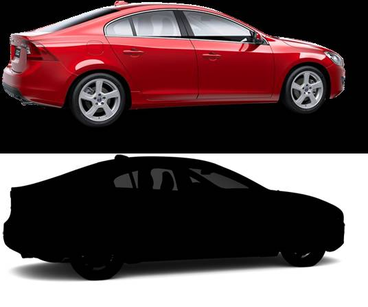

Check Network tab and ensure each dataURL appears only once.

A car, behind which the transparent-squares background can be seen.
The src image was not found; the img displays as a 100x100 red square.